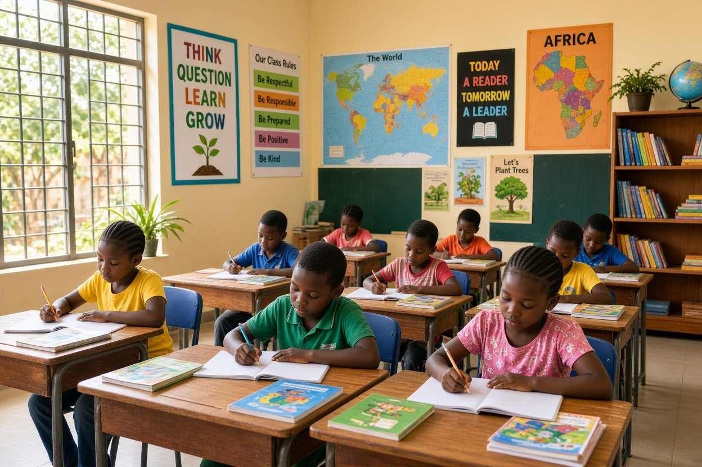
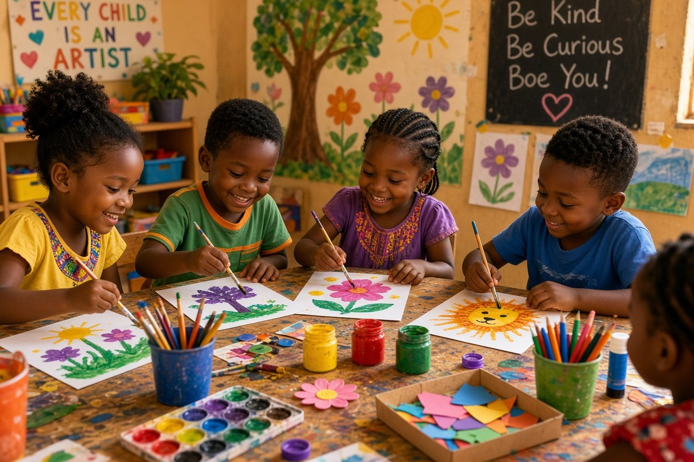
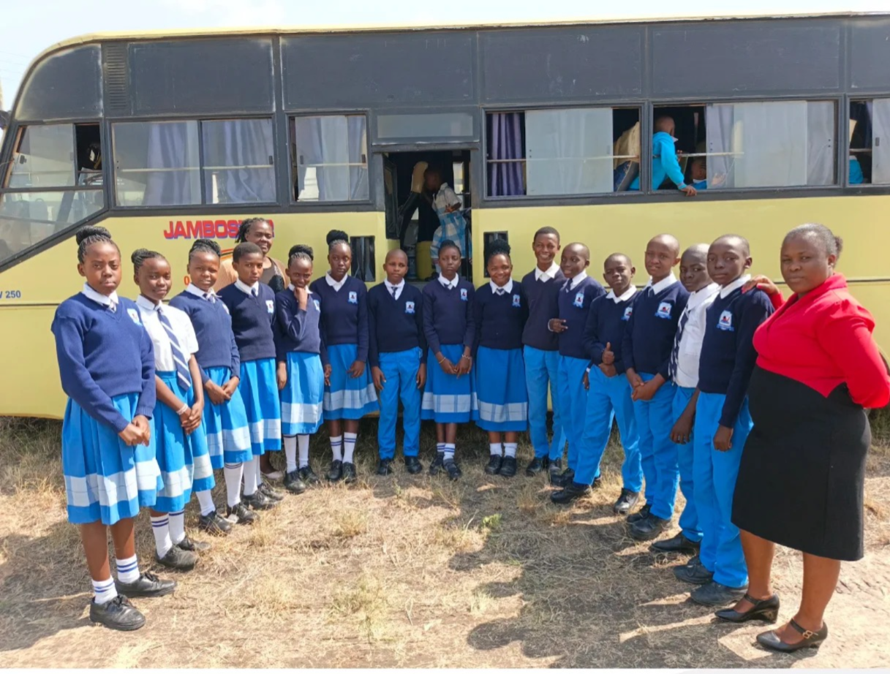

School Transport
Sewa Academy provides school transport for families within Athi River and surrounding areas. Routes, availability and charges are confirmed by the school office.
Ask about transportMore than lessons: a balanced school experience that gives children room to learn, play, create, participate and grow.

Sewa Academy combines classroom learning with activities and experiences that support the whole child.
Our school life includes academic learning, sports and play, creative activities, music, school trips, scouts and opportunities for learners to develop confidence and responsibility.
Families can also enquire about school transport serving Athi River and surrounding areas. Transport availability, routes and current charges should be confirmed directly with the school.
Ask About School TransportExplore the experiences that make school life more complete.
Sewa Academy provides school transport for families within Athi River and surrounding areas. Routes, availability and charges are confirmed by the school office.
Ask about transport
Supportive learning spaces where children can participate, ask questions and build strong foundations for their next stage of education.

Creative and physical activities help learners develop talent, discipline, teamwork and confidence.

School activities such as scouts and clubs provide opportunities for responsibility, cooperation and personal development.

Educational and recreational trips help learners gain real-world experiences beyond the classroom.
We aim to create a welcoming school community where children feel supported, valued and encouraged to learn.
Arrange a school visit and speak with the school about admission, programmes, activities and transport.
Contact Sewa Academy